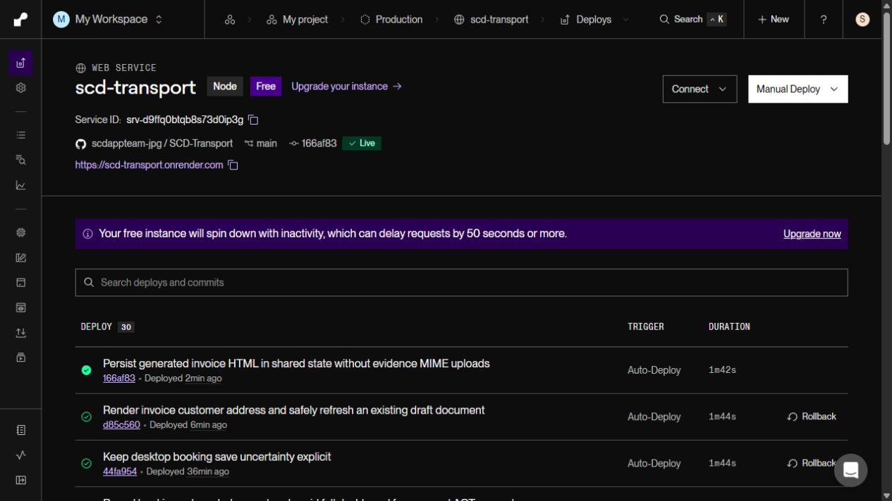
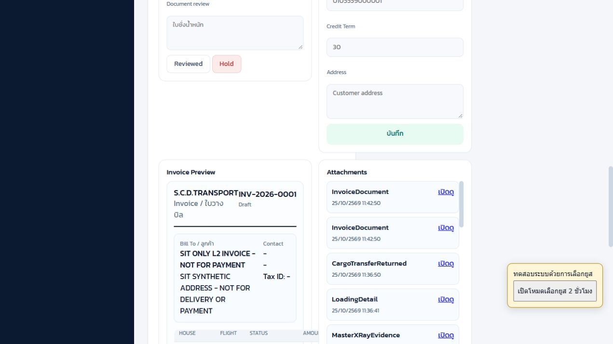
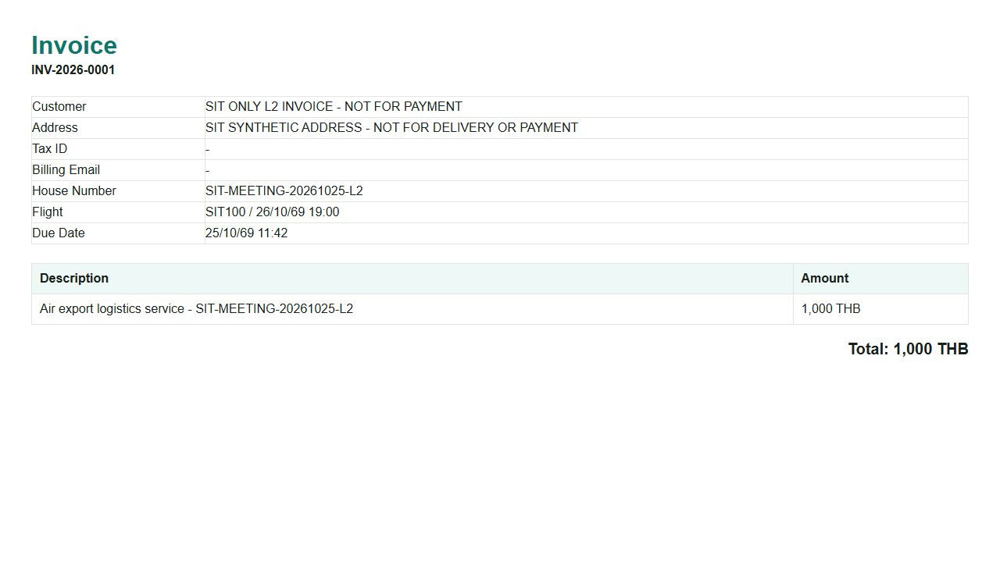
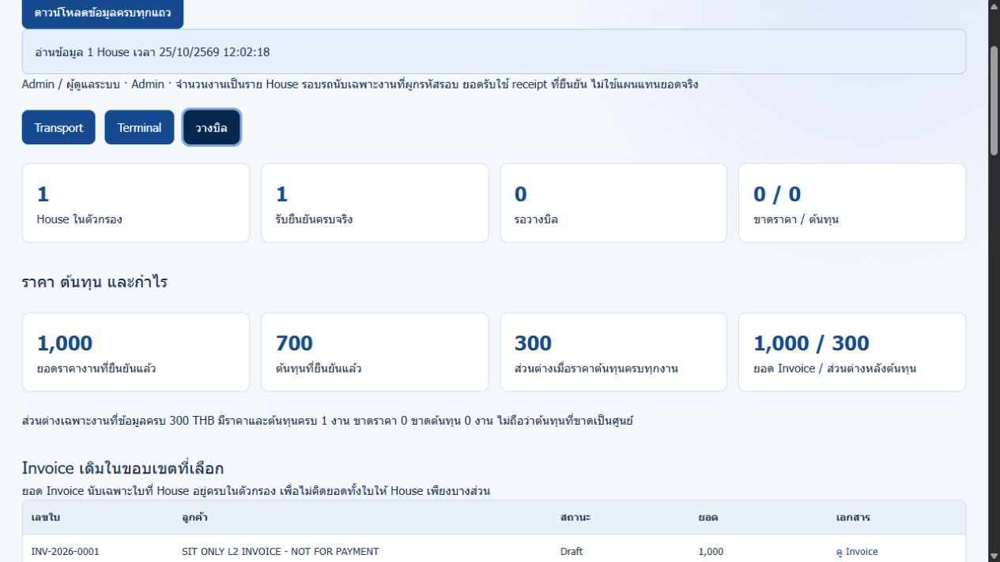

แก้ที่อยู่ Invoice ให้ตรง Preview — ทดสอบซ้ำ SIT L2
25 ตุลาคม 2026 • Production SCD Transport • Deploy commit 166af83
INV-L2-01 ผ่านหลังแก้
Invoice INV-2026-0001 ของ SIT-MEETING-20261025-L2 แสดงแถว Address ตรงกับ Preview: SIT SYNTHETIC ADDRESS - NOT FOR DELIVERY OR PAYMENT อัปเดตเฉพาะเอกสารของ Draft เดิม ไม่สร้าง Invoice ใหม่
ผล HTTP การเปิดเอกสาร สถานะในทะเบียน และภาพหน้าจอเป็นผลจริงบน production ส่วนลูกค้า ที่อยู่ ยอด 1000 บาท ต้นทุน 700 และหลักฐานขนส่งเป็นข้อมูล SIT ทั้งหมด ไม่ส่งอีเมล ไม่เรียกเก็บเงินจริง ไม่ปิดเป็น Billed และยังไม่เปิด Geofencing
1. สิ่งที่แก้
- แยก renderer ราย House ไป
invoice-document.cjs เพิ่มแถว Address จาก Customer แหล่งเดียวกับ Preview ใช้ HTML escaping ป้องกันอักขระพิเศษกลายเป็น markup พร้อมแสดงหลายบรรทัดและตัดบรรทัดยาว - Invoice ใหม่จะใช้ template นี้ ส่วน Draft เดิมใช้
POST /api/billing/refresh-document โดยระบุ Invoice ID และ House ให้ตรงกัน ผู้เรียกต้องเป็น Billing/Admin/Executive เอกสารที่ส่งแล้ว/ไม่ใช่ Draft และแบบรวมถูกปฏิเสธ ไม่แก้ทะเบียนบิลหรือข้อมูลงาน - เอกสาร HTML ที่สร้างได้รับการลงทะเบียนเป็น InvoiceDocument และเก็บเนื้อหา HTML ในฐานข้อมูลกลางเดิมเพื่ออ่านกลับเมื่อไฟล์ local ไม่อยู่ โดยใช้ ID เดิมเมื่อเรียกซ้ำ ไม่เพิ่ม attachment ซ้ำ บิล L2 ได้ attachment
INVOICE-DOC-INV-2026-0001 เพียงรายการเดียว
2. ผลทดสอบ
| หัวข้อ | ผล |
|---|
| ที่อยู่ใน Invoice ตรง Preview | ผ่าน อ่าน HTML และตรวจภาพจริง |
| เลข / House / ยอด / สถานะ | INV-2026-0001 / SIT L2 / 1000 บาท / Draft คงเดิม |
| วันที่สร้าง / ครบกำหนด / Customer / Email | ทะเบียน Invoice ก่อน–หลังเท่ากัน ไม่มีการเปลี่ยนฟิลด์เหล่านี้ |
| อัปเดตเอกสารซ้ำ | ผ่าน ไม่สร้างบิลใหม่ และมี InvoiceDocument เพียงหนึ่งรายการ |
| Driver ขออัปเดต | 403 ตามคาด |
| อักขระพิเศษ / ภาษาไทย / หลายบรรทัด | ผ่าน automated tests แยกจาก production ไม่แก้ที่อยู่ SIT เพื่อทดสอบเพิ่ม |
| House ไม่ตรง / Customer ไม่ตรง / ไม่ใช่ Draft | บล็อกใน automated tests ไม่ทดลองเปลี่ยนสถานะบิลจริงเพื่อทดสอบ |
| Code checks | 262 tests ผ่าน, TypeScript และ production build ผ่าน, targeted lint ผ่าน Whole-repository lint ยังมี 4 errors/3 warnings เดิมในไฟล์ไม่เกี่ยวข้อง |
3. วิธีตรวจซ้ำด้วยบิลเดิม
- เข้าระบบด้วย Billing/Admin เปิด งานภาคสนาม → Billing กรอก House
SIT-MEETING-20261025-L2 และตรวจว่าเลือก Invoice INV-2026-0001 อย่ากดสร้าง Draft ใหม่ - ดู Preview ต้องเห็นลูกค้า SIT ONLY L2 INVOICE - NOT FOR PAYMENT และที่อยู่ SIT ตามข้อความด้านบน ยอดรวม 1000 บาท
- เปิด Transport · Terminal · วางบิล ค้น L2 เลือกแท็บวางบิล แล้วกด ดู Invoice ของ INV-2026-0001 หรือเปิด URL เดิมด้านล่าง รีโหลดหน้าเอกสารหากยังเห็นเวอร์ชันเก่า
- ตรวจแถว Address ใต้ Customer ต้องตรงกับ Preview พร้อม House L2 และ Total 1000 THB ชื่อ/ที่อยู่ต้องยังเป็น SIT ไม่ใช้ข้อมูลลูกค้าจริง
- ตรวจทะเบียนยังมีบิลใบเดิมสถานะ Draft วันที่และยอดเดิม ไม่กดส่งอีเมลหรือปิด Billed ไม่ต้องพิมพ์ป้ายสินค้าใหม่
การอัปเดตเอกสารเดิมรอบนี้เรียกผ่าน API ด้วยสิทธิ์ SIT Billing แล้วอ่านกลับและตรวจ UI จริง ไม่ได้เพิ่มปุ่ม refresh-document ลงหน้าเว็บ หากต้องทดสอบการสร้าง Invoice ใหม่ ให้ใช้ชุด SIT ใหม่ ไม่รีเซ็ตหรือสร้างซ้ำบน L2 นี้
4. ภาพหน้าจอจริง

Render Live commit 166af83 — ภาพ production จริง คลิกเพื่อเปิดขนาดเต็ม
Preview ปัจจุบันแสดงที่อยู่ลูกค้า SIT — ภาพ production จริง คลิกเพื่อเปิดขนาดเต็ม
Invoice เดิมแสดงแถว Address ตรงกับ Preview และยอด 1000 บาท — ภาพ production จริง คลิกเพื่อเปิดขนาดเต็ม
ทะเบียนมี INV-2026-0001 ใบเดิม สถานะ Draft ยอดเดิม — ภาพ production จริง คลิกเพื่อเปิดขนาดเต็ม Geofencing ปิดและไม่มีพิกัด WH3 — ภาพ production จริง คลิกเพื่อเปิดขนาดเต็ม
Geofencing ปิดและไม่มีพิกัด WH3 — ภาพ production จริง คลิกเพื่อเปิดขนาดเต็ม
5. Isolation audit
เทียบฟิลด์ธุรกิจและการเงินของงานครบ 3,806 รายการ รวม L2 ไม่เปลี่ยน ทะเบียน Invoice ลูกค้าทั้งหมด ผู้ใช้ คิว/ช่อง Dock แผนที่คลังและนโยบายคงเดิม (ไม่เทียบ updatedAt และค่าเวลารอเฉลี่ยที่เปลี่ยนตามนาฬิกา) เพิ่มเฉพาะ attachment ของเอกสาร Invoice เดิม ไม่มีบิลใหม่ ไม่มีอีเมลและไม่มีการเรียกเก็บ Geofencing ยังคงปิด พิกัด WH3 เว้นไว้
Hash ก่อน: de83788a45350dea10e19ac988d2067e1a649e0c38127bb56e4dd1e3eaa59eee
หลัง: de83788a45350dea10e19ac988d2067e1a649e0c38127bb56e4dd1e3eaa59eee
API test session ชั่วคราวถูก revoke หลังจบ เก็บข้อมูล SIT ไว้ตรวจย้อนหลัง ไม่เปลี่ยนผู้ใช้/บทบาทหรือรหัสผ่าน มีการทดสอบ fallback ของเอกสารจาก shared state ใน automated tests รอบ production นี้ไม่ได้ทำ restart เพิ่มหรือตัดฐานข้อมูลเพื่อทดสอบ
6. ผลคำขอจริง
PASS 23 รายการ รวมประวัติก่อนแก้และการอ่าน baseline/ตรวจซ้ำ รอบแรก d85c560 เคยตอบ 503 จากการส่ง HTML ไป evidence storage ซึ่งตอบ 400 คงผล FAIL เดิมไว้เป็นประวัติ จากนั้นแก้การเก็บ HTML ใน shared state และ deploy 166af83 รอบทดสอบหลังแก้ผ่าน ไม่ใช่จำนวน business scenario ที่ไม่ซ้ำ
| # | รุ่น | กรณี | คาด / ได้จริง | ผล |
|---|
| 1 | d85c560 | baseline | 200 / 200 | PASS |
| 2 | d85c560 | policy-before | 200 / 200 | PASS |
| 3 | d85c560 | dock-before | 200 / 200 | PASS |
| 4 | d85c560 | map-before | 200 / 200 | PASS |
| 5 | d85c560 | temporary-api-session | 200 / 200 | PASS |
| 6 | d85c560 | existing-billing | 200 / 200 | PASS |
| 7 | d85c560 | existing-driver | 200 / 200 | PASS |
| 8 | d85c560 | driver-refresh-denied | 403 / 403 | PASS |
| 9 | d85c560 | refresh-existing-draft-document | 200 / 503 | FAIL |
| 10 | 166af83 | driver-refresh-denied | 403 / 403 | PASS |
| 11 | 166af83 | refresh-existing-draft-document | 200 / 200 | PASS |
| 12 | 166af83 | repeat-refresh-no-new-invoice | 200 / 200 | PASS |
| 13 | 166af83 | address-matches-preview-in-generated-document | SIT SYNTHETIC ADDRESS - NOT FOR DELIVERY OR PAYMENT / SIT SYNTHETIC ADDRESS - NOT FOR DELIVERY OR PAYMENT | PASS |
| 14 | 166af83 | after | 200 / 200 | PASS |
| 15 | 166af83 | policy-after | 200 / 200 | PASS |
| 16 | 166af83 | dock-after | 200 / 200 | PASS |
| 17 | 166af83 | inspect-dock-after | 200 / 200 | PASS |
| 18 | 166af83 | inspect-dock-summary | 200 / 200 | PASS |
| 19 | 166af83 | after | 200 / 200 | PASS |
| 20 | 166af83 | policy-after | 200 / 200 | PASS |
| 21 | 166af83 | map-after | 200 / 200 | PASS |
| 22 | 166af83 | verify-dock-operational-fields | 200 / 200 | PASS |
| 23 | 166af83 | timeline-after | 200 / 200 | PASS |
| 24 | 166af83 | revoke-temporary-sessions | 200 / 200 | PASS |
7. เอกสารและไฟล์อ้างอิง
ขนาดเอกสาร 1437 bytes • SHA-256 ef567b4b72c764f4eef095adfefbdbcee08971349cba38728b9ffc928b2a251d